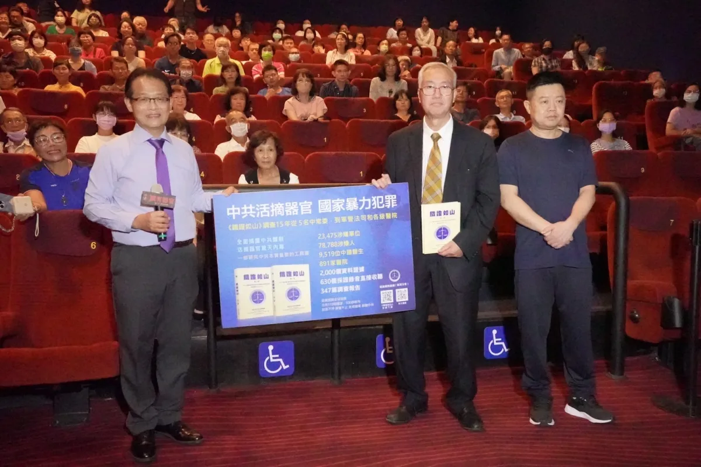
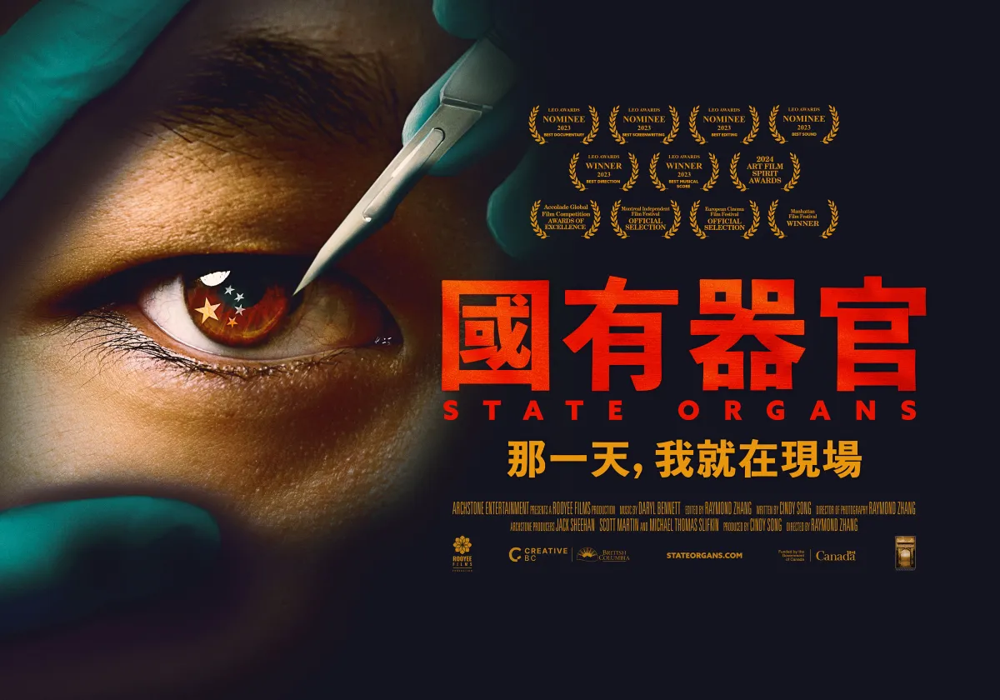
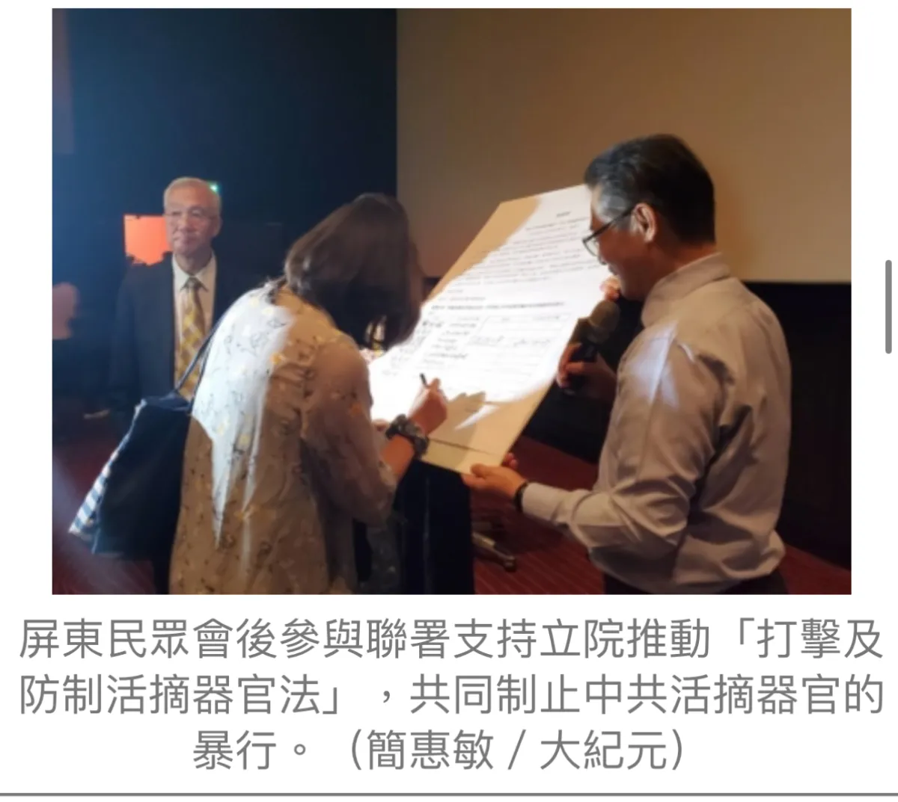

紀錄片簡介 ｜ SYNOPSIS
《國有器官》是一部加拿大紀錄片，聚焦中國器官移植制度背後長期被掩蓋的真相，透過第一手證詞與調查，呈現追尋失蹤親人與揭露迫害的艱難歷程。
影片記錄受害者家屬、醫界人士與調查者的證言，揭開強制摘取器官與良心犯遭迫害的沉重內幕。
這不只是一部紀錄片，更是一封寫給世界的警訊：看見真相，才有改變的開始。
得獎肯定 ｜ AWARDS
《國有器官》以嚴謹調查與勇敢證詞，讓被掩蓋的生命故事走向世界。
獲最佳導演、最佳音樂等肯定。
2025 Academy Award®-qualified Documentary Feature。
以真實證詞震撼國際觀眾，持續引發關注。
劇照與紀錄 ｜ KEY VISUALS



先睹為快 ｜ TRAILER
※ 若影片無法播放，建議使用 Safari 或最新版 Chrome 瀏覽。
導演的話 ｜ DIRECTOR'S NOTE
「我們想從更宏大的視角來探究生命的來源和意義，解釋人間的一些亂象和它後面的原因，以及展示生命所面臨的選擇和出路。」
— 導演 章勇進 Raymond Zhang
觀眾心得 ｜ AUDIENCE VOICES